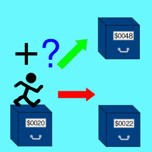

BPL
Przeniesienie pod warunkiem, że ostatni wynik był nieujemny
Opis

Wykonuje operację rozgałęzienia do miejsca programu o ilość podaną jako argument rozkazu lub pisząc w asemblerze, do instrukcji oznaczonej etykietą, która następuje po mnemoniku.
W rzeczywistości rozgałęzienie następuje, gdy flaga N jest ustawiona na 0. Flaga N przyjmuje taką wartość, jeśli ostatni wynik działania był nieujemny.
Tabela opkodów
| Opkod | Tryb adresowania | Czas wykonywania (cykle) |
|---|---|---|
| $10 |  |
2-4* |
* Rozkaz wykonuje się dwa cykle, gdy nie nastąpiło rozgałęzienie. W razie rozgałęzienia trwa trzy cykle. Rozkaz trwa aż cztery cykle, jeśli nastąpiło rozgałęzienie i zarazem przekroczenie strony.